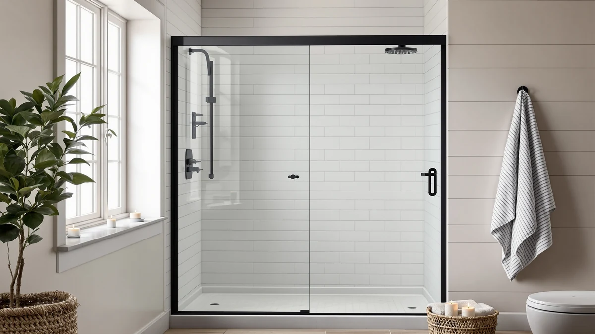

Walk in Shower Doors vs Curtain: Which Is Better? (2026)
Prices and picks verified as of November 2026. Independent, reader-supported reviews.


Things to Know Before You Buy
- Glass shower doors cost more upfront but hold up for over a decade with basic cleaning.
- Curtains cost far less and install in minutes, but need regular washing or replacement.
- Doors contain splashing water more reliably; curtains need a weighted hem and a snug liner to compete.
- Renters and anyone on a tight renovation budget tend to favor curtains for the lack of permanent install.
- Bathroom layout matters: tight alcoves and low ceilings can limit which door styles fit.
The walk in shower doors vs curtain decision usually comes down to how long you plan to stay in a bathroom and how much water containment actually matters to your floor. We compared specs, current Amazon pricing and patterns across thousands of verified owner reviews for both product types to see where each one earns its keep.
A glass shower door is a one-time purchase that typically outlasts the bathroom's next two paint jobs, while a curtain is a recurring cost you replace every year or two. Neither option is wrong. The right pick depends on your budget, your lease terms and how much daily upkeep you're willing to do.
Quick Answer
For a bathroom you own and plan to keep for years, a frameless or semi-frameless glass door is the better long-term investment: it contains water more reliably and needs almost no replacement. For renters, tight budgets or anyone who wants a five-minute install, a curtain wins on cost and flexibility. There's no universal winner here. Walk in shower doors vs curtain really comes down to how long you'll be in that bathroom.
What is Walk In Shower Doors?
Walk in shower doors are fixed glass panels, usually tempered safety glass, that enclose a shower or tub-to-shower conversion in place of a curtain rod. They come in three main styles. Frameless doors use minimal metal hardware and thick glass, for a cleaner look that tends to cost more. Semi-frameless doors add a metal frame around part of the panel for support at a lower price. Sliding or bypass doors run on a track and work well in alcove tubs where a hinged door would need floor clearance it doesn't have.
Most kits in this category are sized for standard openings, commonly in the 44 to 60 inch range, and the product listings specify the exact width range they fit. Installation involves mounting a track or hinges to the wall and tub, then setting the glass panels, a job the manufacturer instructions describe as doable with basic tools for most DIYers, though an out-of-square wall can add complexity.
Because the glass and hardware are built to handle daily water exposure, these doors are a near-permanent fixture. Swapping one out later means removing silicone sealant and drilling new hardware, so the choice tends to outlast several other bathroom updates around it.
What is Curtain?
A shower curtain is a length of fabric or vinyl that hangs from a rod and closes off the shower on one side, usually paired with a separate waterproof liner. It's the default setup in most rental apartments and older homes because it requires no permanent alteration to the tub surround or wall tile. Rods range from a basic tension rod that wedges between two walls to a curved rod that adds elbow room inside the shower.
Curtains come in dozens of fabrics, patterns and lengths, which makes them the far easier option to match to a bathroom's décor or to change on a whim. Liners, typically PEVA, EVA or vinyl, do the actual job of blocking water, while the outer curtain is mostly decorative. A magnetic hem or suction cups on the liner help it cling to the tub wall and cut down on splashing.
Upkeep is the tradeoff for that flexibility. Fabric and liners trap moisture and soap residue, and owners report mold and mildew setting in within months without regular washing or ventilation. Most curtains and liners get replaced well before a glass door would show any wear.
Head-to-Head: Build Quality & Durability
On raw durability, walk in shower doors vs curtain isn't a close contest. Tempered glass panels, aluminum or stainless tracks and rubber sweep seals are built to handle years of water exposure without structural change. Spec sheets for most frameless and semi-frameless kits list glass thickness between 5/16 and 3/8 inch, thick enough to resist flexing or cracking under normal use. The main wear points owners mention are roller wheels on sliding doors and the silicone seal, both of which can be serviced without replacing the whole unit.
Curtains are built to a lower durability standard by design, since they're meant to be inexpensive and replaceable. Fabric curtains lose their shape and color with repeated washing, and liners develop mineral buildup and small tears at the grommets within a year or two of regular use. Reviewers consistently note that a curtain's lifespan is measured in months to a couple of years, not the decade-plus range typical of glass.
That gap narrows somewhat with a quality liner and routine washing, which can stretch a curtain's usable life. But even a well-maintained curtain degrades on a schedule a glass door simply doesn't follow. If you want hardware you install once and mostly forget about, a door wins this category outright.
Head-to-Head: Price & Value
Current Amazon pricing puts most frameless and semi-frameless shower doors in the $230 to $400 range for a standard alcove opening, based on the listings compared for this guide. A basic curtain, liner and tension rod can run well under $40 total, and even a nicer fabric curtain with a sturdy rod rarely clears $80.
The value calculation shifts once you factor in replacement cost. A curtain owner who swaps the liner every year and the curtain every two years can spend close to a glass door's upfront price over a decade, spread out in smaller purchases instead. A glass door's cost is front-loaded but doesn't repeat.
For a short-term rental or a bathroom you're not planning to keep long, the curtain's lower upfront cost and zero installation expense make it the better value. For a bathroom you'll use for five or more years, the door's price evens out or wins over that stretch.
Head-to-Head: Use Experience
Day to day, a glass door contains water more consistently than a curtain, which owners across both product categories bring up often. A sealed door with a sweep strip keeps splashing inside the enclosure even with a handheld sprayer or a tall shower user, while a curtain can billow inward from the water pressure or cling to your skin, letting water escape at the edges.
A curtain does offer more elbow room in a tight bathroom, since it doesn't require clearance for a swinging door and a curved rod can add several inches of shower space. It's also near-silent to open and close, while sliding glass doors can develop a slight rattle on the track over time if rollers aren't kept clean.
Cleaning routines differ the most. A glass door needs a quick squeegee pass after each use to prevent hard water spots, a habit that keeps it looking new with minimal effort once it's routine. A curtain needs occasional machine washing or a liner swap, a bigger task done less often. Neither routine is hard, but they ask for different kinds of consistency from the person using the shower.
When to Choose Walk In Shower Doors
Choose a glass door if you own the home and plan to stay for several years, since the upfront cost pays off through reduced upkeep and replacement over that stretch. It also makes sense if your bathroom floor or subfloor has had water damage before, since better containment lowers the odds of a repeat.
A door is also the right call if you're already renovating the bathroom. Adding glass alongside new tile or a new tub surround is far simpler than retrofitting it later, and the two projects share the same disruption window. If resale is on your mind within the next few years, a glass door reads as a finished bathroom in a way a curtain doesn't, which can matter at listing time.
Skip it if you're not confident in the install or don't want to deal with removing old caulk and hardware down the line, since that removal is more involved than taking down a curtain rod.
When to Choose Curtain
Choose a curtain if you're renting, since most leases either prohibit permanent fixtures like glass doors or require the landlord's approval before you install one. It's also the practical pick if you move often, since a curtain packs flat and sets up in a new bathroom in minutes.
A curtain makes sense on a tight budget too, whether that's furnishing a first apartment or stretching a renovation budget toward bigger-ticket items like a new vanity or flooring. And if your bathroom layout is unusual, an oddly angled wall or a clawfoot tub with no alcove, a curtain and rod adapt to shapes a rigid glass panel can't.
Skip it if you've dealt with repeated water damage near the tub, since a curtain's weaker containment can let the problem continue even with a good liner.
Our Top Picks
If you've decided glass is the right call for your bathroom, these are the walk in shower doors we'd point you to first, based on specs, pricing and patterns in verified owner reviews.

Editor’s Pick
Frameless Shower Door Matte Black
A frameless matte black door for a minimal, modern enclosure without a heavy metal frame.
$249.30
Check Price on Amazon
Best Value
GETPRO Shower Door Double Sliding
A double sliding door that keeps the lowest price of the three without giving up a sealed glass enclosure.
$232.70
Check Price on Amazon
Premium Choice
Frameless Shower Door 56-60" W
Sized for 56 to 60 inch openings, built for larger bathrooms that need extra width and thicker glass.
$399.99
Check Price on AmazonFrequently Asked Questions
Are walk in shower doors better than a curtain for resale value?
Glass shower doors generally read as a bathroom upgrade to buyers, while a curtain reads as a placeholder. In the walk in shower doors vs curtain comparison, glass tends to help resale more, though the gap matters most in bathrooms that already have updated tile and fixtures.
Can I install a shower door myself or do I need a contractor?
Manufacturer instructions for most frameless and semi-frameless kits describe a DIY-friendly process with basic tools, though an uneven wall or out-of-square alcove can complicate the job. A curtain rod needs no special skill at all, which is part of why renters lean toward curtains.
Do shower curtains leak more water than shower doors?
Yes, in general. Owner reviews of both product types consistently mention that a curtain without a weighted hem or a liner that clings to the tub lets more water escape than a sealed glass door with sweep strips.
How often should I replace a shower curtain versus a glass door?
Fabric and vinyl curtains typically get replaced every one to two years as mold and mineral buildup set in, according to patterns in verified owner reviews. Tempered glass doors are built to last well beyond a decade, with the gasket and rollers as the only parts likely to need attention.
Which option is easier to clean, a shower door or a curtain?
A glass door needs a squeegee pass or a quick wipe after each use to prevent hard water spots, while a curtain needs a full wash or swap once mildew sets in. Reviewers consistently note that glass takes less effort per use but curtains are cheaper and faster to replace outright.
Final Verdict
There's no single winner in walk in shower doors vs curtain, only a better fit for your situation. If you own your bathroom and want a fixture that contains water well and lasts for years with minimal upkeep, a frameless door like the Ogonbrick matte black model is the stronger long-term pick. If you're renting, moving soon or working with a tight budget, a curtain and liner deliver nearly the same daily function for a fraction of the cost and zero installation hassle.